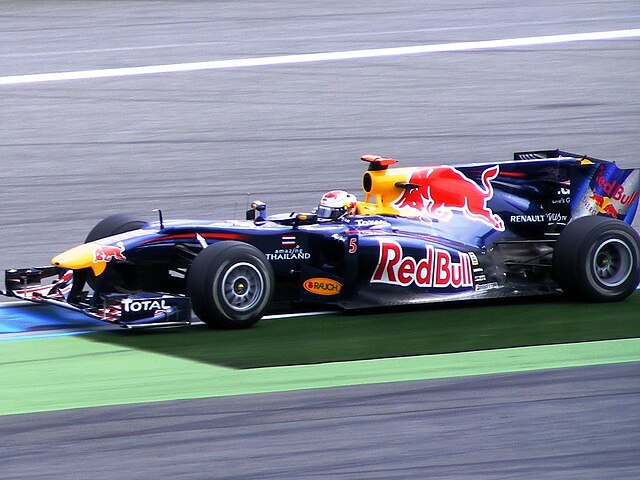

Dopo una stagione in Toro Rosso, dove dimostra di avere un grande potenziale, arriva il passaggio in Red Bull (2009).
Inizia quindi la parentesi più vincente della carriera di Sebastian Vettel, nella quale mette a segno 4 titoli mondiali e 35 Gran Premi vinti,
prima del trasferimento alla scuderia del suo cuore, ovvero la Ferrari.

L'annata del 2009 è di altissimo livello: la prima vittoria in Red Bull arriva nel Gran Premio di Cina, e si contende la vittoria del titolo piloti fino all'appuntamento in Brasile,
a San Paolo, dove Jenson Button si laurea campione.
Si tratta comunque di una buonissima stagione per Seb, che conclude il mondiale vincendo ad Abu Dhabi e arrivando
secondo nella classfica piloti.
Statistiche 2009:
Nel 2010 arriva il primo titolo mondiale: si tratta di una stagione serratissima, con quattro piloti a contendersi la vittoria finale all'ultima gara.
Leggende del calibro di Fernando Alonso, Mark Webber e Lewis Hamilton vengono battute dal più giovane campione del mondo della storia della F1, che vincendo ad Abu Dhabi,
complice anche il settimo posto dello spagnolo, si porta a casa il trofeo più pregiato.
Statistiche 2010:
Seguono nel 2011, 2012 e nel 2013 altri tre titoli mondiali: il primo e il terzo totalmente dominati, mentre il secondo vinto ancora una volta all'ultima gara precedendo il ferrarista Ferando Alondo in classifica.
Statistiche 2011:
Statistiche 2012:
Statistiche 2013: